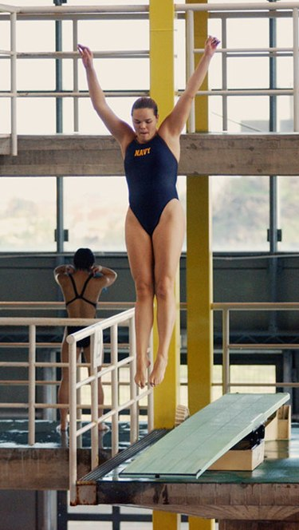

Tramplen atlama; yarışmalarda tramplen atlayışları, su yüzeyinden 5 ya da 10 m yükseklikteki sabit bir platformla 1 ya da 3 metre yükseklikteki esnek sıçrama tahtasından yapılır.
Olimpiyat Oyunları'nda yalnızca 10 m'lik platformlarla 3 m'lik sıçrama tahtaları kullanılır. Yarışmalarda en az üç hakem sıçrama, bedenin havadaki durumu, öngörülen hareketlerin yürütülüşü ve suya dalış gibi noktaları dikkate alarak her atlayışa puan verirler. Her atlayış için verilen puanlar toplanır ve hareketin zorluk derecesiyle çarpılır.
11 atlayış sonunda en yüksek puanı toplayan sporcu birinci olur. Erkekler 5'i zorunlu 6'sı serbest toplam 11, kadınlar ise 5'i zorunlu, 5'i serbest toplam 10 atlayış yaparlar.
Kule atlama; tramplenden farklı olarak üzerinden atlanan platform yaylanmaya müsait değildir ve sudan yüksekliği 10 metredir. Sporcular tramplen atlamada olduğu gibi değerlendirilen 10 atlayış yaparlar.

Yarışmalarda atlayışlar beş grupta gerçekleştirilir; ayrıca yalnızca sabit platformdan el üstü duruşla atlayışlar da yapılır. Birinci grupta yer alan atlayışta sporcu yüzü suya dönük olarak tahtanın ya da platformun ucundan atlar ve öne doğru yarım ya da daha fazla sayıda perende atarak suya dalar.
İkinci grupta sırtı suya dönük duran sporcu sıçrar ve havada ters perende atarak suya dalar. Üçüncü grupta yüzü suya dönük atlayan sporcu havada dönerek yüzü tramplene dönük durumda suya dalar. Dördüncü grupta platformun ucundan suya dönük atlayan sporcu, havada döndükten sonra gene yüzü tramplene dönük suya dalar.
Beşinci gruptaki burgulu atlayışta, sporcu önceki dört gruptaki atlayışlardan birini yaparken, aynı zamanda üç dönüşle birlikte öne doğru bir buçuk perende atmak gibi çeşitli hareketleri de gerçekleştirir.
Listede yer alan atlayışların çoğu üç ayrı konumda gerçekleştirilebilir. Bunlar düz, pike ve çömelme konumlarıdır. Birincisinde diz ve kalçalar düz tutulur; ikincisinde dizler düz tutulur, ama beden kalçadan kıvrılarak öne eğilir; üçüncüsünde ise hem kalça, hem de dizler kıvrılır ve beden bir topu andırır.
En karmaşık atlayışlar bu konumların herhangi bir bileşiminden oluşan serbest konumda gerçekleştirilebilir.